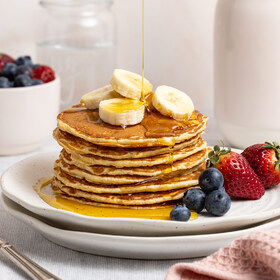

Sunday Pancakes
Ingredients:
To serve:
Method
Sift Edmonds Flour and Sugar into a medium-large bowl. Make a well in the centre of the dry ingredients.Add the lemon zest, Meadow Fresh Milk, egg and melted Tararua Butter/margarine and whisk to combine.Heat a large non stick frying pan over medium heat and grease lightly with Tararua Butter or oil.For each pancake, place 2 tablespoons of batter into the pan. Cook for 2 minutes or until bubbles form on the surface. Turn and cook for a further 1 to 2 minutes, or until pancakes are cooked through.Garnish with berries, sliced banana and Chelsea Flavoured Syrup - Butterscotch, Caramel, Vanilla, Maple or Honey Maple.
Classic Omelette
Ingredients:
To serve:
Method
Whisk eggs, water, salt and pepper.Spray 8-inch (20 cm) non-stick skillet with cooking spray. Heat over medium heat. Pour in egg mixture. As eggs set around edge of skillet, with spatula, gently push cooked portions toward centre of skillet. Tilt and rotate skillet to allow uncooked egg to flow into empty spaces.When eggs are almost set on surface but still look moist, cover half of omelette with filling. Slip spatula under unfilled side; fold over onto filled half.Cook for a minute, then slide omelette onto plate.